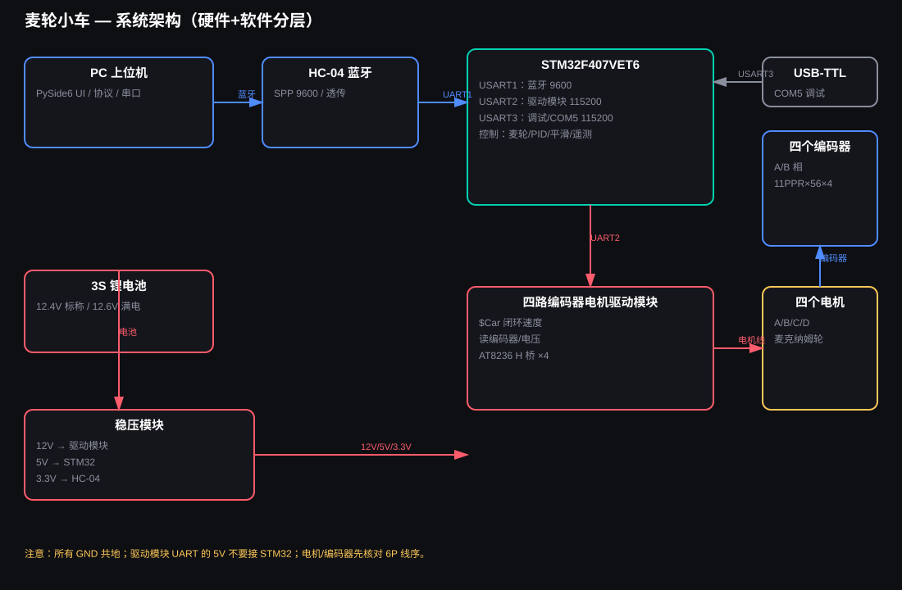
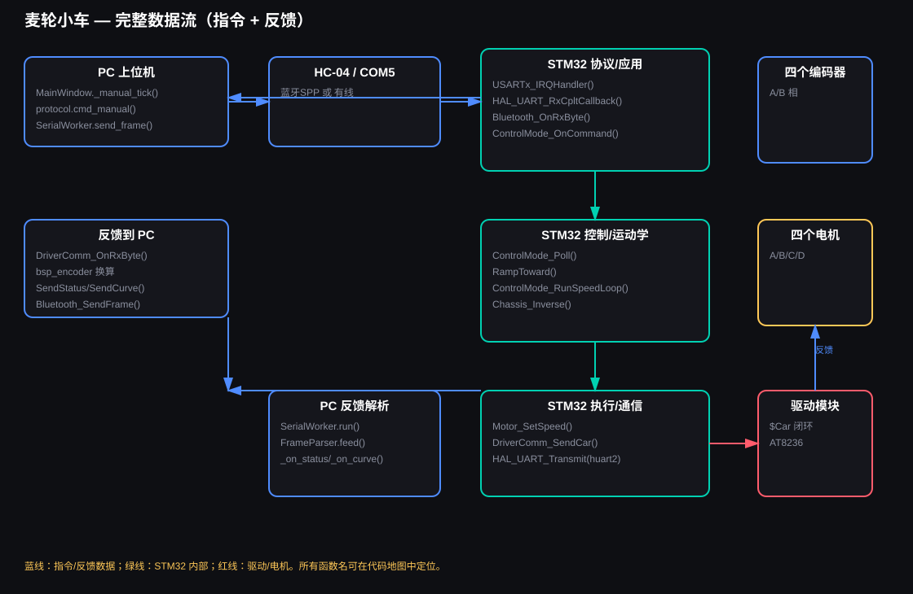
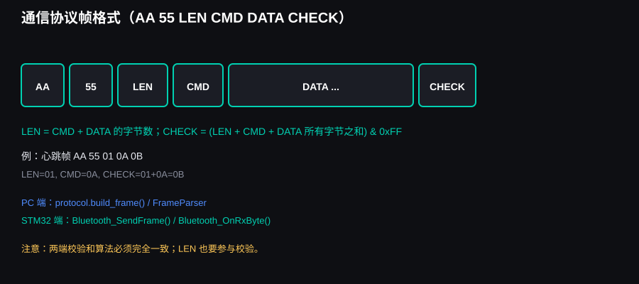

应用层
PySide6 上位机、手机 SPP 串口助手。产生车体速度和调试命令。
STM32F407 / HC-04 / FOUR-WHEEL MECANUM
从电脑摇杆到四个轮子，从编码器计数到 PID 曲线。这里不是一张说明书，而是一张可以点、可以调、可以验证的工程地图。
SYSTEM MAP
上层是 STM32 的位置决策，下层是驱动模块的速度执行。理解这两层，才能知道 PID 该调哪里、编码器数据为什么重要。

PySide6 上位机、手机 SPP 串口助手。产生车体速度和调试命令。
HC-04 透传、AA55 二进制帧、校验和、状态与曲线回传。
模式状态机、加速度平滑、位置 PID、定时旋转与路线。
$Car 文本协议、四轮限幅、编码器 20ms 计数。
AT8236 H 桥、PWM、电机、减速箱、麦轮、霍尔编码器。

_manual_tick()cmd_manual()HC-04Bluetooth_OnRxByte()Chassis_Inverse()$CarCODE ATLAS
从配置、协议、算法到执行器，点击筛选，看每个文件所处层级、存在理由和关键技术。
PARAMETER CENTER
搜索任何宏定义，查看当前值、单位、影响和调错后的表现。带 算法 的项目需要实测标定。
| 参数 | 当前值 | 单位 | 影响什么 | 调错后的现象 |
|---|
CALIBRATION WIZARD
用实测距离反算 CPR，用实测旋转角反算 90° 时间。所有输入只保存在本机浏览器，不会上传。
发 enczero，记录四轮平均累计计数为起点。
低速直线走 1000mm，避免打滑和急加速。
建议 CPR = 计数 ÷ 圈数；圈数 = 距离 ÷ 轮周长。
实测 90° 的实际角度，反算新的时间常数。
公式：新时间 = 当前时间 × 90 ÷ 实测角度。结果只是起点，最终以复测为准。
MECANUM KINEMATICS
拖动三个滑杆，观察 A/B/C/D 四轮目标速度。带 算法 的公式来自 Chassis_Inverse()。
A = vx − vy − (a+b)·wz
B = vx + vy + (a+b)·wz
C = vx + vy − (a+b)·wz
D = vx − vy + (a+b)·wz
a+b = 0.12675 m（轴距 130mm / 轮距 123.5mm）
PID WORKBENCH
这是一个近似位置环仿真，用于理解趋势，不替代实车标定。曲线显示位置随时间的响应。
PROTOCOL LAB
选择指令、填入参数，生成 AA 55 LEN CMD DATA CHECK 帧；也可以粘贴十六进制数据反向解析。
AA 55 07 01 E8 03 00 00 00 00 F3

FAULT TREE
不要同时改代码、参数和接线。按“链路 → 传感 → 执行 → 算法”的顺序缩小范围。
FIELD MANUAL
完整教学手册已经转换为网页，可在手机上阅读。也可以直接打开原始 Markdown 文件。